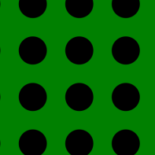

This HIT involves reasoning about images. The task should take about five minutes. Please pay attention. Thanks!
Legal information: By answering the following questions, you are participating in a study being performed by cognitive scientists at the University of California, Irvine. If you have questions about this research, please contact Greg Scontras at g.scontras@uci.edu. You must be at least 18 years old to participate. Your participation in this research is voluntary. You may decline to answer any or all of the following questions. You may decline further participation, at any time, without adverse consequences. Your anonymity is assured; the researchers who have requested your participation will not receive any personal information about you.
Instructions
You will see a series of scenarios with two people and three objects. For example, a scenario might feature Mary and John and the three objects below:

Mary has to choose a single word to communicate one of the objects to John. John is supposed to choose an object that matches the description, and Mary gets to observe his choice. However, John might have preferences for certain colors (blue, red, or green), shapes (clouds, circles, or squares), or patterns (solid, striped, or polka-dotted). These preferences would be reflected in John's object choice.
Your task is to help Mary choose the utterance to signal one of the objects to John. Try to pick an utterance that will reveal John's color, shape, or pattern preferences!
Suppose wants to learn about 's preferences in the following scenario:
can choose a single utterance and then watch select an object.
What should say?
definitely not
definitely
Please adjust the sliders before continuing.
Additional information
Answering these questions is optional, but will help us understand your answers.
Did you read the instructions and do you think you did the HIT correctly?
Gender:
Age:
Level Of Education:
Native Language:
Did you enjoy the hit?
We would be interested in any comments you have about this experiment. Please type them here: